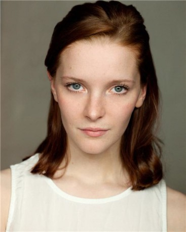
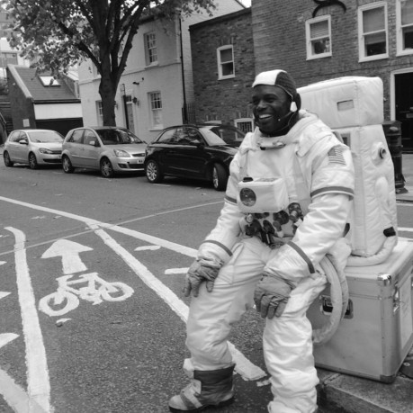
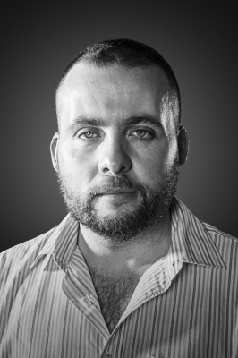

#9218 The Call Up - An den Grenzen der Wirklichkeit
Alternativ: The Call Up


 IMDB-Wertung: 4.9 / 10
IMDB-Wertung: 4.9 / 10  Metascore: 0
Metascore: 0 
Eine Gruppe begeisterter Online-Computerspieler wird eingeladen, ein völlig neues Virtual-Reality-Spiel auszuprobieren. Es ist der feuchte Traum eines jeden Zockers, denn nachdem die Gamer ihre High-Tech-Anzüge angezogen haben, verwandelt sich ihre Umgebung in ein hyperrealistisches Kriegsszenario. Nehmen sie ihre VR-Masken wieder ab, befinden sie sich wieder in der Realität. Alle sind begeistert und das fröhliche Rumgeballere beginnt. Wie in einem Egoshooter müssen sie als Team zusammenarbeiten, um sich von Level zu Level bis zum Highscore in Höhe von 100.000 Euro durchzuarbeiten. Schnell wird jedoch aus dem munteren Spiel tödlicher Ernst, als sie bemerken, dass ihre Leben auf dem Spiel stehen. Denn wer im VR-Spiel verwundet wird, trägt auch in der Wirklichkeit Verletzungen davon. Die Anzüge sind gesichert und können nicht mehr ausgezogen werden, das blutige Spiel nimmt seinen Lauf...
Jahr: 2016
Dauer: 90 Minuten
FSK: 16
Land: England Studio: Studio Hamburg EnterprisesTonspuren: DD5.1 - ,
Untertitel:
Auflösung: 1080p (1920x1040) Größe: 3205 MB
Genre: Action, Sci-Fi
Regisseur: Charles Barker
Drehbuch: Charles Barker
Soundtrack: Tom Raybould
Darsteller:
- Tom Benedict Knight als Marco
-  Morfydd Clark als Shelly
-  Chris Obi als The Sergeant
 Parker Sawyers als Str8 Shoot3r / Andre
Parker Sawyers als Str8 Shoot3r / Andre- Max Deacon als Soxxx_1 / Carl Anderson
- Adriana Randall als Taylor
- Greg Kolpakchi als Terrorist
- Ali Cook als Edward
-  Dino Fazzani als Terrorist
- Dave Goshorn als Henchman
- Stuart McNeil als Terrorist
- Douggie McMeekin als Adam
- Boris Ler als T3rrorist#1 / Zahid
- Malcolm Modele als Terrorist
- Mac Pietowski als Terrorist
- Gary John Barber als Russian Terrorist
- Chris Cusick als Terrorist
- Peter Sean Morris als Terrorist
Datei: X:\2016(A-F)\Call Up - An den Grenzen der Wirklichkeit, The (2016, FSK16, 1920x1040).mkv seit 20.07.2018
Festplatte: HD 2016(A-Z)
 Es gibt insgesamt 147 Filme in der Gruppe '2016(A-F)'
Es gibt insgesamt 147 Filme in der Gruppe '2016(A-F)'